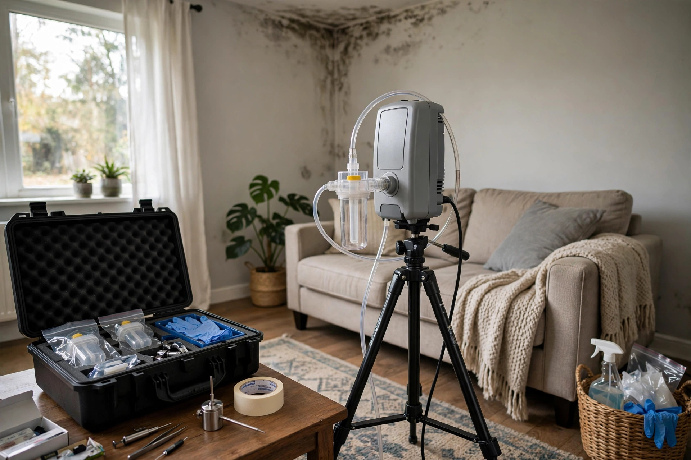
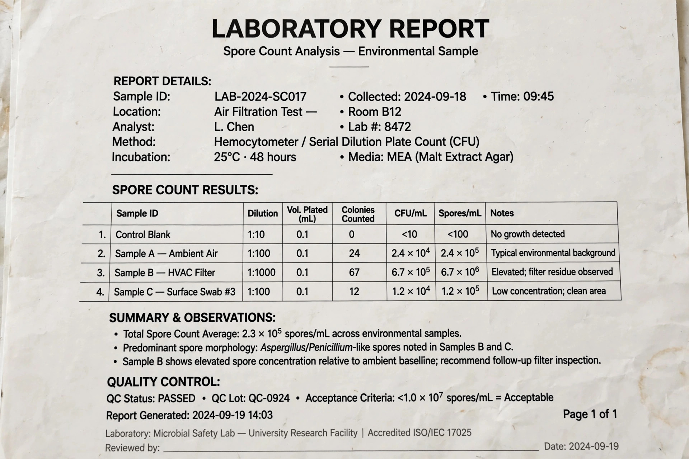

Mold Testing in Boise, ID
Air and surface samples, analyzed by an accredited lab, compared against an outdoor baseline. Useful for home purchases, health questions, landlord disputes, and confirming a cleanup actually worked.
A buyer’s inspection window on a 1970s Boise Bench ranch
A buyer is ten days into an inspection period. The home inspector notes a musty basement and a faint stain on the furnace-room wall but can’t say whether it’s active. The buyer wants something in writing before deciding whether to negotiate.

Three kinds of test, three different questions
Testing isn’t one thing. The right sample depends on what you’re trying to find out.
Air sampling
A pump pulls a measured volume of air through a spore trap cassette. The lab counts and identifies spores per cubic meter.
Surface (tape or swab)
A sample taken directly from a visible stain. Tells you what genus it is — and whether it’s mold at all, or dirt, soot or efflorescence.
Wall-cavity sampling
A small port into the drywall cavity lets air be sampled from inside the wall without tearing it open.
The EPA notes that if mold is visible, sampling is often unnecessary — removal is the next step. Testing earns its cost when growth is suspected but hidden, or when you need documentation.
What changes the price of a test
Mold testing is priced per sample plus the inspection visit. These are the things that move it up or down:
| Factor | Why it matters |
|---|---|
| Number of samples | Every air or surface sample is a separate lab fee. Most homes need 2–5, including one outdoor control. |
| Lab turnaround | Standard results take a few business days; rush 24-hour processing costs more. |
| Square footage & levels | A basement plus two floors needs more sampling points than a single-level condo. |
| Report type | A real-estate or legal-grade written report takes longer to prepare than a verbal walk-through. |

Mold testing FAQs
Are DIY mold test kits from the hardware store accurate?
Settle-plate kits will grow mold in nearly any home, because spores are always in the air. Without a measured air volume and an outdoor comparison, the result can’t tell you whether your levels are abnormal.
Is there a “safe” level of mold in the air?
There are no federal exposure limits for mold. The CDC and EPA instead compare indoor results to outdoor air and look for species indoors that aren’t present outside.
Can a test tell me if it’s “black mold”?
A lab can identify Stachybotrys on a surface or air sample. Keep in mind that many dark molds aren’t Stachybotrys, and the CDC treats all indoor mold growth as something to remove regardless of color.
Should I test after mold has been removed?
Yes, if you want proof. Post-remediation (clearance) testing by someone independent from the removal crew is the clearest way to confirm the job worked before walls are closed.
Do Idaho sellers have to disclose mold?
Idaho’s seller property disclosure form asks about known problems with the property. Test results are documentation either side can use during negotiation; your real-estate agent can advise on specifics.